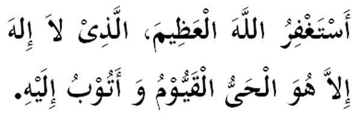

|

Terjemahan "Aku mohon ampun kepada Allah yang tiada tuhan kecuali Dia, Tuhan yang sentiasa hidup dan berkekalan (mentadbir alam ini) dan aku bertaubat kepadaNya (akan segala dosaku)." Fadhilat Wirid Daripada Zaid, Maula Nabi (SAW) berkata: "Aku dengar bapaku menceritakan kepada aku, daripada nenekku ia dengar Rasulullah bersabda, sesiapa yang membaca (bacaan di atas) maka diampunkan segala dosanya." (Riwayat Abu Daud dan Tarmidzi) |